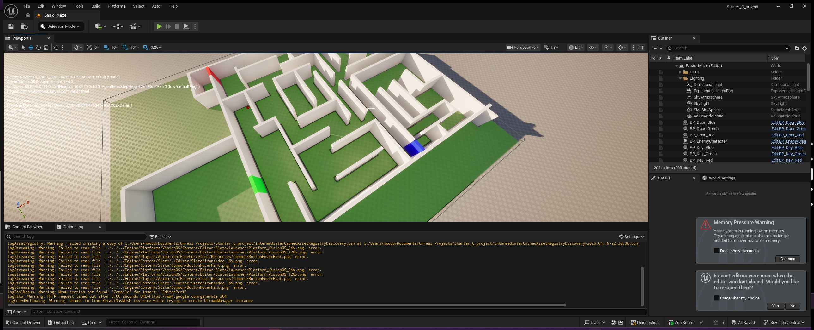

UE5: Line Trace Puzzle Mechanics

Technical Highlights:
- Interaction System: Engineered a Line Tracing system for responsive 'E' key interactions.
- Color Matching Logic: Developed a check comparing player state variables against door criteria.

